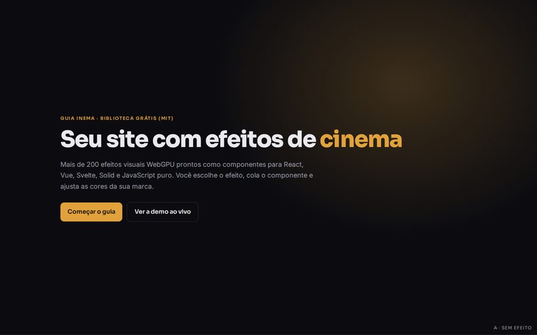
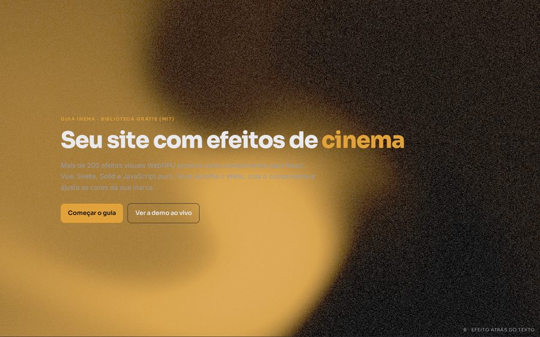
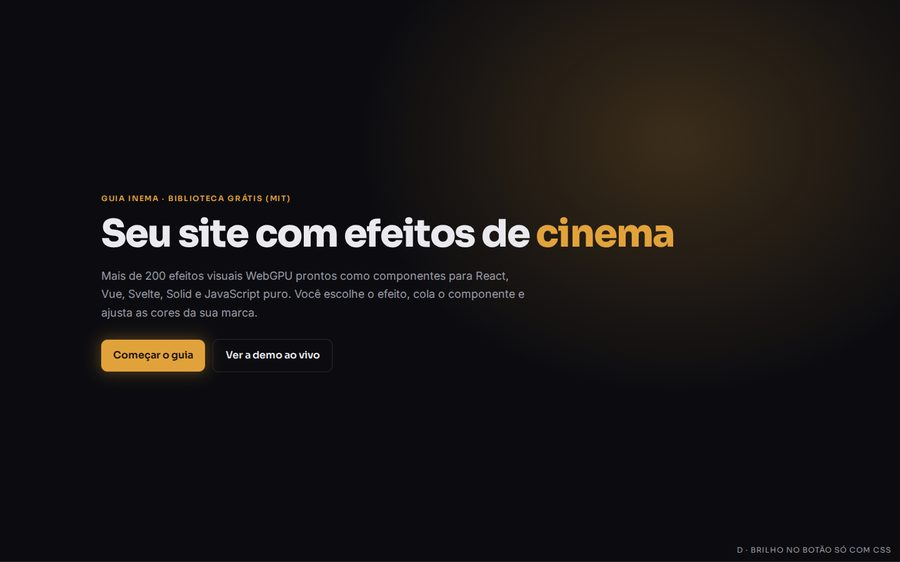
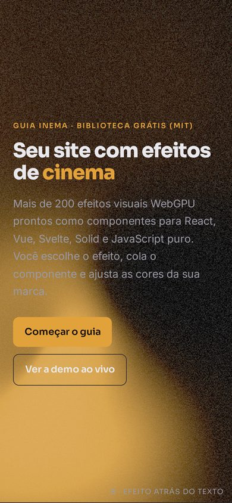

Pegamos a mesma abertura de site e mudamos só uma coisa: onde fica o efeito. Medimos se o texto continua legível no pior quadro da animação e quanto o efeito gasta do computador.
Efeito atrás do texto deixou a abertura mais vistosa e o parágrafo ilegível. Efeito no botão manteve o texto igual à versão sem efeito e chamou o olho para o clique, mas o WebGPU gasta tanto quanto a tela cheia. O mesmo destaque feito só com CSS custa menos.
Texto com folga de contraste e quase nenhum gasto de CPU. Nada aponta o próximo passo além da cor do botão.
Em algum momento da animação, 100% do fundo do parágrafo fica abaixo do contraste mínimo (4,5:1). No pior quadro, o cinza do texto e o amarelo do fundo quase se igualam (1,0:1).
O texto fica igual ao da versão A e o brilho leva o olho ao "Começar o guia". Só que, para iluminar um botão, o WebGPU gastou tanto quanto na tela cheia.
Mesmo destaque no botão, com o texto igual ao da versão A, sem baixar 2,5 MB de biblioteca e com metade da CPU da C no computador comum e no fraco.
Tela 1440×900. O print é um quadro da animação; nas versões B e C o fundo se mexe o tempo todo.



Tela 390×844, a do iPhone 14. Aqui o texto ocupa mais da tela, e na versão B o parágrafo continua sumindo no amarelo.

Contraste no pior quadro: escondemos o texto, fotografamos o fundo atrás dele em 10 momentos da animação e calculamos o contraste de cada pixel com a cor do texto. A tabela mostra o pior valor encontrado. O mínimo recomendado (WCAG AA) é 4,5:1 para o parágrafo e 3:1 para o título grande.
CPU: tempo que a página ocupou o processador durante 5 s. Todas as versões ficaram em 60 quadros por segundo nesta máquina.
| Aparelho | Versão | Título (pior) | Parágrafo (pior) | Parágrafo abaixo de 4,5:1 | CPU | Quadros/s |
|---|
"O efeito ajuda a perceber a próxima ação ou compete com o texto?" Depende de onde ele fica. Atrás do texto, ele compete e perde: o parágrafo fica ilegível em parte da animação. Perto do botão, ele indica a ação sem tocar na leitura.
"Algum exemplo melhora compreensão e aparência ao mesmo tempo?" Nesta abertura, o destaque no botão (C ou D) melhora as duas coisas: a página fica mais viva e mostra onde clicar, com o texto tão legível quanto na versão sem efeito. Como o destaque é pequeno, o CSS resolve; o WebGPU vale a pena quando o efeito é o próprio assunto, como na demo ao vivo do guia.
Regra prática: nada animado atrás de parágrafo. Se o efeito precisar ficar atrás do texto, ponha uma camada escura entre os dois e meça o pior quadro de novo.